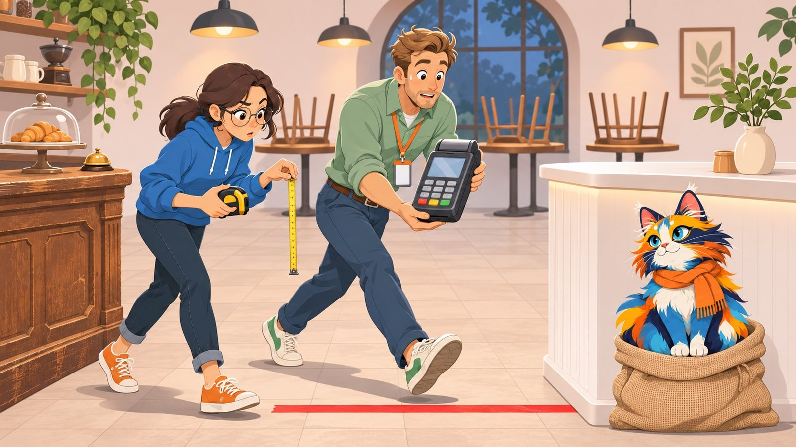

Сначала вспомним
Тест: +3%, вилка от +1 до +5%. Конверсия в контроле 10%. Сколько лишних заказов это даёт на 1000 гостей?
1000 гостей при конверсии 10% делают 100 заказов. +3% от них — 3 заказа, а вилка от +1 до +5% — от 1 до 5 заказов. Результат — это вилка, и обещать стоит вилку. Это было в шаге 6.
Тест бесплатной доставки: p = 0.02. Что это значит?
p-value — как часто в мире без эффекта случается разница не меньше нашей: здесь в 2 тестах из 100. Шумом такое объяснить трудно. Но ни вероятности, что доставка работает, ни размера эффекта из p не получить. Это было в шаге 7.
Шаг 9 из 11
MDE: что мы способны заметить
После шага ты сможешь спросить MDE и срок до запуска теста и прикинуть их на калькуляторе.

Боб хочет запустить тест «на недельку». Заметит ли неделя эффект в +2%? И как узнать это до запуска, а не через неделю?
В прошлом шаге короткий тест пропускал настоящие эффекты. Значит, ещё до запуска стоит спросить: какой эффект наш тест вообще способен заметить? Если ответ «только +10%», а мы ждём +1%, тест можно не запускать.
Боб заменил фотографии блюд


Новые фото красивее. Думаю, конверсия вырастет процента на два. Запустим тест на недельку?

+2% — это 102 заказа вместо 100 на каждую тысячу гостей. За неделю мы такое, скорее всего, не заметим.
Как Алиса это знает, разберём на колоколах. А пока вопрос: если хочешь заметить эффект вдвое меньше, во сколько раз больше людей понадобится?
Выбери вариант.
Мир, где эффекта нет, и мир, где он есть
Серый колокол — какие разницы мы увидим, если фото ничего не меняют. Красный — если фото правда дают эффект. Пунктир — граница значимости: дальше неё лежат 5% серого колокола. Зелёная часть красного колокола — эксперименты, где мы эффект заметим.
Зелёная доля — как часто тест заметит такой эффект
Двигай длину теста и смотри: колокола сужаются и расходятся, зелёная часть растёт. Эффект при этом остаётся тем же.
Ниже линии тест близорук
Самый маленький эффект, который тест заметит с шансом 80%, — главное число в плане любого теста.
MDE зависит от трафика, длины теста, сплита и метрики, но не от того, какой эффект мы надеемся получить.
Чем дольше тест, тем меньший эффект он способен заметить
Сколько дней нужно, чтобы заметить эффект
Обычно вопрос ставят наоборот: какой эффект нам важен и сколько для него держать тест. Последний ползунок — какую долю гостей отдаём новинке.
Боб отдал новинке 20% гостей вместо половины: «так безопаснее». Срок теста вырос в 1.6 раза. Почему?
Ширина вилки разницы складывается из шума обеих групп, и сильнее шумит та, где людей меньше. При 80/20 в новинке 2 гостя из 10 вместо 5: её шум вырос сильно, а шум контроля упал чуть-чуть. Пример на 16 000 гостей: десерт заказали 30 из 1000 в контроле и 36 из 1000 в новинке. При 50/50 p ≈ 0.03, а при 80/20 на тех же долях p ≈ 0.09.
Идея из статьи: Рон Кохави и соавторы, практическое руководство по онлайн-экспериментам — 2009
MDE не берут из прошлой победы
Прошлый тест с фото победил с +6%. Повторим его в других кафе и рассчитаем длину под те же +6% — хватит недели.
Опасно. Если план рассчитан на +6%, а настоящий эффект +3%, тест пропустит его примерно в 7 случаях из 10.
Почему нельзя планировать тест под «прошлые +6%»?
Тест «побеждает», когда шум случайно подыграл эффекту. Поэтому у победителей эффект в среднем завышен, иногда вдвое, — в шаге 10 это видно на игре. Если рассчитать новый тест под +6%, а на деле там +3%, мощность упадёт с 80% примерно до 30%: тест пропустит эффект в 7 случаях из 10.
Идея из книги: Дэвид Шпигельхалтер, «Искусство статистики»
MDE слишком большой. Варианты
Тест на 140 дней никто ждать не будет. Вот что обычно делают. Открой карточки.
Боб, почему две недели?
Почему тест идёт две недели, а не одну и не три?
На такой вопрос бывает шесть типов ответов. Два сильных: мощность, то есть шанс заметить важный эффект, и точность, то есть вилка нужной ширины. Два честных, но с оговоркой: взяли всех, кто есть и сколько позволяют время и деньги — тогда всё равно стоит посчитать, какой эффект тест способен заметить. И два слабых: «у всех так» и никакого обоснования.
Боб за полгода запустил шесть тестов, и на каждый вопрос Алисы ответил по-своему. Разложи его ответы по типам.
Летняя веранда работает две недели в году. В тест попали все её гости.
Какой это тип обоснования?
Взяли всех, кто вообще есть, — больше людей не бывает. Вопрос «а если подольше» не встаёт, но посчитать, какой эффект такой тест способен заметить, всё равно стоит: может оказаться, что даже все гости веранды не дают увидеть важный эффект.
Дольше двух недель нельзя: в июле меняем всё меню.
Какой это тип обоснования?
Это ограничение ресурсов. Ответ честный, но вторичный: при таком сроке нужно посчитать MDE. Если за две недели тест замечает только +6%, а ждём +1%, запускать его нет смысла.
За две недели вилка сузится до ±1%. С такой точностью можно планировать закупки.
Какой это тип обоснования?
Это обоснование точностью: «хотим знать эффект с погрешностью не больше ±1%». Сильный ответ, когда важен сам размер эффекта, например для закупок.
Меньше +2% фича не окупится. Две недели дают 80% шанс заметить +2%.
Какой это тип обоснования?
Это обоснование мощностью: важный для бизнеса эффект +2%, мощность 80%, отсюда срок. Именно так считает калькулятор выше.
У нас все тесты идут две недели, так заведено.
Какой это тип обоснования?
Это эвристика: «так заведено». Иногда она совпадает с расчётом, но MDE у каждого теста свой: он зависит от трафика, метрики и сплита. Две недели для кнопки на главной и для редкого раздела — очень разные тесты.
Ну, две недели — нормально же звучит.
Какой это тип обоснования?
Обоснования нет. Это самый частый ответ, и с него стоит начинать разговор: «давай посчитаем, что такой тест способен заметить».
Шесть типов обоснования — идея из книги: Даниэл Лакенс, «Improving Your Statistical Inferences»
Когда нужно доказать, что не стало хуже

Переносим оплату на сервис подешевле. Заказов больше не станет, я хочу только убедиться, что их не стало меньше.
Тогда до запуска договоримся, сколько потерять не страшно. Скажем, не больше 2%. И проверим, что вилка целиком правее этой линии.
Так проверяют переезды, рефакторинг и дешёвые замены: цель не победить, а не проиграть больше допуска. Обычный незначимый тест тут не подходит: «разницы не нашли» ещё не «не стало хуже». Красная линия — допустимая потеря. Правее неё вся вилка — переезжаем, вилка пересекает линию — пока не знаем, вся левее — откатываем.
Вилка заказов в тесте, 95% доверительный интервал, и красная линия допустимой потери
Вдвое строже допуск — вчетверо больше гостей. Поэтому допуск выбирают по делу: сколько заказов не жалко отдать за экономию на сервисе.
Допуск −2%. Итог: −0.4%, вилка от −1.8 до +1.0%. Что решаем?
Вся вилка правее красной линии −2%: потеря больше допуска с данными почти не согласуется. Сервис дешевле, заказы в пределах договорённого — переезжаем. Небольшую потерю до 2% мы заранее признали приемлемой.
Идея из книги: Лими Нассери, «Practical A/B Testing»
Какой тест выбрать
Три вопроса, которые может задавать тест: «лучше» — новинка должна победить; «не хуже» — потеря не больше допуска; «одинаково» — разница мала в обе стороны. Для каждой ситуации выбери нужный.
Новая кнопка «Повторить заказ». Боб хочет, чтобы заказов стало больше.
Кнопку делают ради роста, значит, тест должен показать рост: вилка правее нуля, а лучше — правее порога пользы. Это обычный тест из всех прошлых шагов.
Переносим приложение на новую библиотеку экранов. Пользы для гостей нет, зато код проще.
Рефакторинг делают ради кода, а не ради гостей. Задача теста — показать, что заказов стало меньше не больше чем на допуск, записанный до запуска.
Переезжаем на новое хранилище заказов. Тревожно, если заказов станет меньше, но и если вдруг больше.
Хранилище не должно менять число заказов вообще. Рост здесь так же тревожен, как падение: скорее всего, заказы пишутся дважды. Поэтому допуск ставят с обеих сторон, и вилка должна целиком лечь между ними.
Автозамена закончившихся блюд в 5 кафе: жалоб стало 37 вместо 31, «незначимо». Боб: «катим». Какой тест был нужен?
«Вред не доказан» не значит «вреда нет». Похожая история была на дорогах США: поворот направо на красный проверяли на малых данных, аварий стало чуть больше, «незначимо» — и разрешили. Вред увидели только крупные исследования. Нужно заранее сказать, какой рост жалоб допустим, и показать, что вилка не заходит дальше.
Идея из книги: Алекс Рейнхарт, «Statistics Done Wrong»
Проверь себя
MDE теста за две недели — 3%. Итог: +1.5%, вилка от −0.6 до +3.6%, незначимо. Что можно сказать?
При MDE 3% вилка в каждую сторону — около ±2.1%, это примерно 0.7 MDE: от −0.6 до +3.6%. 3% внутри неё, так что эффект в 3% не исключён. О том, чего нет, судим по краю вилки, а не по MDE.
Тест за неделю замечает +4%. Боб хочет замечать +1%. Сколько недель нужно?
Вдвое меньший эффект — вчетверо больше людей. Вчетверо меньший — вчетверо от вчетверо, в 16 раз больше. При том же трафике это 16 недель.
Как уменьшить MDE, не удлиняя тест?
MDE зависит от того, сколько людей в группах. При 90/10 в новинке всего десятая часть трафика, и колокол разницы гораздо шире: при 50/50 тот же MDE достигается почти втрое быстрее.
Боб хочет проверить напоминание о годовщине первого заказа. Оно срабатывает примерно у 1 гостя из 1000 в неделю. В тесте неделя и по 500 гостей в группе. Что покажет тест?
Напоминание сработает у 0.5 гостя на группу — то есть в группе будет ноль или один такой человек. Такой тест не может заметить даже огромный эффект. Прежде чем запускать, прикинь, сколько людей вообще столкнутся с изменением: MDE считают по ним, а не по всем гостям.
Вопрос про редкое напоминание — идея из книги: Дарелл Хафф, «Как лгать при помощи статистики»
Сначала MDE, потом тест
- MDE — самый маленький эффект, который тест заметит в 8 случаях из 10. Ниже него тест близорук: эффект в половину MDE он заметит примерно в 3 случаях из 10.
- Чтобы заметить эффект вдвое меньше, нужно вчетверо больше людей.
- Эффект для расчёта — тот, что важен бизнесу, а не цифра прошлой победы: победители обычно завышены.
- MDE зависит от трафика, длины теста, сплита и шумности метрики. От наших надежд он не зависит. Неравный сплит дорог: 80/20 — примерно в 1.6 раза дольше, 90/10 — в 2.8, 99/1 — в 25 раз.
- О том, чего нет, судим по краю вилки, а не по MDE.
- «Почему две недели?» Сильные ответы — мощность и точность. «У всех так» и «просто кажется» — повод посчитать.
- Тест «не хуже» — для переездов и рефакторинга: допуск до запуска, вилка целиком правее него. Вдвое строже допуск — вчетверо больше гостей.
Теперь у того, что мы сделали руками, есть названия:
- MDE
- минимальный эффект, который тест заметит с шансом 80%
- Мощность
- шанс заметить эффект заданного размера, если он есть
- Тест «не хуже»
- проверка, что потеря не больше допуска, заданного до запуска